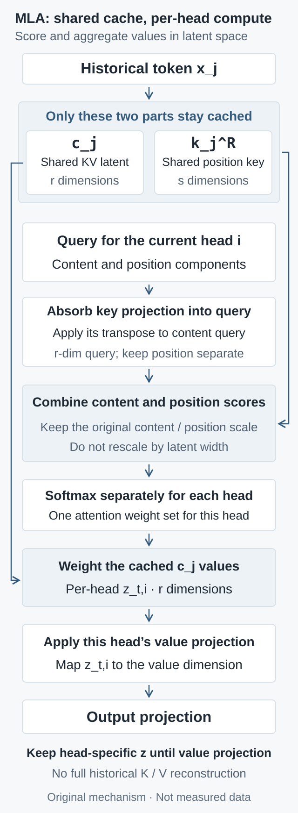

# Column-vector pseudocode; one current token, one head.
# c_cache: [T, r]; k_rope_cache: [T, s]
q_latent = U_K.T @ q_content # [r]
logits = model_scale * (
c_cache @ q_latent + k_rope_cache @ q_rope
)
weights = stable_softmax(logits + absolute_position_mask)
z = weights @ c_cache # [r], separate for each head
o = U_V @ z # [d_v]
# Concatenate head outputs, then apply the model output projection.
How MLA saves the KV cache: matrix absorption without changing softmax temperature
Derive cache compression through two paths of the same MLA, examine RoPE and the 192-versus-576 scaling trap, and separate memory savings from speed. Includes reproducible algebra checks.
Long-context inference often conflates two questions: does storing less history also mean doing less arithmetic? Multi-head Latent Attention (MLA) gives an instructive answer. It can substantially shrink the historical cache while moving some attention dot products into a wider space. Memory capacity and arithmetic do not necessarily move in the same direction.
This article revisits the DeepSeek-V2 report, first released on May 7, 2024 (using v5 of June 19), and the DeepSeek-V3 report, first released on December 27, 2024 (using v2 of February 18, 2025), alongside pinned official inference code. The question is specific: why can attention operate directly on a latent cache without reconstructing historical K and V, while its softmax temperature must remain unchanged? This is an analysis of a foundational mechanism, not a claim that these reports are new releases.
1. Fix the comparison: one MLA, two orders of computation
Equivalence here means two forward paths with the same MLA weights. One explicitly expands historical K and V; the other retains latents and moves linear maps to the query side and after aggregation. It does not mean that an arbitrary trained multi-head attention model can be converted to MLA without loss. The joint low-rank structure is an architectural constraint; language capability still requires training and task evaluation.
Consider one attention layer and use column vectors. Token \(j\) has layer input \(x_j\in\mathbb R^D\), with \(H\) query heads. Let the content key/query dimension per head be \(d_k\), the value dimension \(d_v\), the joint latent dimension \(r\), and the separate positional dimension \(s\). Each scalar occupies \(b\) bytes. Batch size, layer count, and cached length will be denoted by \(B,L,T\).
Include normalization in the definition of the latent:
The superscript C marks the unrotated content branch. The current query \(q^C_{t,i}\in\mathbb R^{d_k}\) comes from the model's query projection. Official implementations can also use a low-rank projection and normalization on the query side; that does not change the identities below, which start with an already constructed query. In particular, RMSNorm cannot be moved freely across a matrix. We absorb linear maps after the latent, keeping normalization where it belongs. The pinned official MLA class provides both naive and absorb paths for comparison.
2. Two changes of order avoid expanding historical K and V
Temporarily omit position. The dot product between a query and a historical key can be rewritten as:
The claim is not that compression approximately preserves similarity. Associativity produces the same scalar. For each current query and head, compute \(\widetilde q_{t,i}\in\mathbb R^r\) once and use it against every historical latent, instead of applying the key up-projection separately to every historical token.
Let \(a_{tj,i}\) be this head's weights after masking and softmax. The value side admits a similar rearrangement:
Here \(O_i\in\mathbb R^{D\times d_v}\) is the output-projection block for head i. Aggregate historical latents first, then expand the value once. Algebraically, the value expansion can also be combined with the output projection. Whether to store that combined weight physically depends on matrix sizes, quantization formats, and kernel efficiency; the identity does not mandate a particular layout.
Sharing the latent does not remove head-specific behavior. Different heads have different queries and attention weights, so each has its own \(z_{t,i}\). Averaging weights across heads and using one common aggregate is not equivalent. These identities hold over real arithmetic. Reordering floating-point sums introduces rounding differences, while quantization and clipping add separate error sources.
3. Why can RoPE not simply pass through the projection?
RoFormer's rotary position embedding applies position-dependent rotations to queries and keys. Write the rotation at position t as \(R_t\). Applying it directly to the content branch would produce:
The last line is a valid identity, but the new “query” depends on historical position \(j\). The benefit of transforming a query once and reusing it across the entire prefix disappears. Historical position encodings do not change whenever a new token is generated; rather, the relative rotation between the projections cannot generally be moved away using a history-independent matrix.
A two-dimensional counterexample suffices: take \(U=\operatorname{diag}(1,2)\), \(R=\begin{bmatrix}0&-1\\1&0\end{bmatrix}\), \(q=(1,0)^\top\), and \(c=(1,1)^\top\). Then \(q^\top RUc=-2\), whereas \(q^\top URc=-1\). Even this favorable case has equal dimensions before and after projection. The matrices do not commute, so rotating the latent does not generally replace rotating the expanded key. Special commuting weight structures would be an additional assumption, not a property of general MLA weights.
The decoupled design retains a separate positional branch. Define \(q^R_{t,i}=R_t\bar q^R_{t,i}\) and \(k^R_j=R_j\bar k^R_j\), both of dimension \(s\), with the positional key shared across heads. The full logits become:
The basic form uses \(\gamma=1/\sqrt{d_k+s}\). The mask \(M_{tj}\) is zero at valid visible positions and negative infinity at future or invalid positions. A stable softmax subtracts the row maximum, and implementations must avoid query rows with no valid keys. The historical cache only needs normalized \(c_j\) and \(k^R_j\), already rotated at its absolute position. Later queries should not rotate an old key again.

Original conceptual diagram, not experimental data. The cache is shared across heads; queries, softmax weights, and aggregates remain head-specific. Content and positional scores are added before a single softmax.
4. From 192 to 576: why the softmax scale stays fixed
For the official V3 configuration with \(d_k=d_v=128\), \(r=512\), and \(s=64\), expanded queries and keys have width \(d_k+s=192\), while concatenated absorbed queries and cached vectors have width \(r+s=576\). Yet their unscaled dot products are identical. Replacing \(1/\sqrt{192}\) with \(1/\sqrt{576}\) multiplies all valid logits by another \(1/\sqrt3\), usually flattening the distribution. It defines a different attention operator.
The intuition that “wider vectors have larger variance” under independent, identically distributed coordinates does not apply here. The absorbed coordinates come from the same trained weights, and their correlations have changed as well. Changing coordinates does not arbitrarily reset the original dot-product variance. Preserving the function requires the original model's temperature convention.
This matters at an actual interface. The checked historical FlashMLA interface defaults to the inverse square root of the query's last dimension when softmax_scale is absent. When passing absorbed tensors, supply the model's scale explicitly. The V3 reference implementation computes its base scale from the original content-plus-position dimension and may apply an additional long-context mscale correction. Integration should preserve the complete settings, not hard-code the basic number used here. Code commits are pinned so that hardware support and interfaces from different versions are not conflated.
# Column-vector pseudocode; one current token, one head.
# c_cache: [T, r]; k_rope_cache: [T, s]
q_latent = U_K.T @ q_content # [r]
logits = model_scale * (
c_cache @ q_latent + k_rope_cache @ q_rope
)
weights = stable_softmax(logits + absolute_position_mask)
z = weights @ c_cache # [r], separate for each head
o = U_V @ z # [d_v]
# Concatenate head outputs, then apply the model output projection.
Chunked prefill must also use absolute positions. With prefix length \(P\), query \(u\) within the current chunk has zero-based position \(P+u\) and may read only keys satisfying \(j\le P+u\). An unshifted triangular mask covering only the chunk can incorrectly exclude the prefix or expose future tokens. In single-token decode, a cache containing only past and current tokens is naturally visible, but padding and invalid slots still need exclusion.
5. Cache savings have an exact ledger; speed has no fixed exchange rate
First compare two cache layouts of the same MLA, allowing the expanded path to share its positional key across heads as well. Elements per layer per historical token are:
With \(H=128\), the configuration above yields 32,832 expanded elements versus 576 latent elements: an exact factor of 57. At two bytes per element, the latent cache occupies 1,152 bytes per layer per token. This is tensor-capacity arithmetic for the stated layout, excluding page tables, partially filled pages, quantization scales, workspace, and distributed replication. The reference code's naive path additionally duplicates positional keys across heads; that extra redundancy should not silently be treated as an algorithmic necessity.
This factor of 57 is also not the V2 abstract's “93.3% reduction.” That statement compares against DeepSeek 67B, whereas this calculation fixes one MLA's dimensions and layer and compares expansion with absorption. Deployment numbers across different architectures, layer counts, and cache precisions cannot be inferred directly from this small ledger.
Now count only multiply-accumulate operations associated with historical attention interactions, treating one multiply-accumulate as one MAC. Omit softmax and projections, and consider one request, one layer, and one current query:
Path
MACs for scores and weighted aggregation
Configuration above: per head per historical token
Expanded K and V
\(HT(d_k+s+d_v)\)
320
Latent computation
\(HT(2r+s)\)
1,088
This part of the absorbed path does 3.4 times as much arithmetic. It also needs \(Hr(d_k+d_v)\) MACs for transforming the current query and expanding the aggregated value. The expanded path instead generates K and V when each new token arrives, and prefill must perform those projections for every token. Comparing a whole layer requires accounting for both sides, rather than selecting one favorable local expression.
Why might the latent path still be faster? Its cache is much smaller and shared across heads; suitable kernels can improve data reuse and matrix-compute utilization. The FlashMLA kernel note of April 22, 2025 explicitly analyzes a configuration where MLA decode can be compute-bound rather than bandwidth-bound and designs its schedule accordingly. A supplier's peak number on one GPU is not a universal speedup multiplier.
Prefill processes many queries together, and the interaction work of naive dense attention grows roughly quadratically with length; an expanded representation can sometimes suit mature matrix kernels better. Decode usually adds only a few queries per step, making the retained compressed cache more directly valuable. The phases may use different computation paths, but masks, positions, normalization, and scaling must agree. Flash-style tiling can also avoid materializing the full quadratic attention matrix: quadratic arithmetic does not imply mandatory quadratic attention-memory allocation.
6. Turn identities into implementation checks that can fail
The downloadable Python standard-library verification script uses synthetic small tensors, fixed random seeds, and double-precision floating-point arithmetic. It tests computation paths without loading a real model, running a GPU, or measuring language quality or throughput. All 12 synthetic cases were actually run for this article. The maximum positive-check absolute error was below \(10^{-14}\), within the preset tolerance of \(10^{-10}\); deliberately incorrect paths produced the expected differences. Run its complete output and assertions locally with:
python3 mla_checks.py
The checks have three groups: equality of logits, attention weights, and outputs between explicit expansion and absorption for the same MLA; agreement between full causal prefill, token-by-token decode, and prefix-aware chunks; and counterexamples that actually differ when the softmax scale is changed, head aggregates are mixed, or rotation and projection are incorrectly exchanged. Passing refers only to the script's declared tolerances and synthetic cases. It does not validate a real low-precision kernel.
For a production kernel, first fix the checkpoint, precision, and absolute positions and compare operators on short sequences. Then cover long contexts, differently sized requests in one batch, incomplete final pages, and quantization. Check both layer-output errors and final task quality: small errors from floating-point reordering or quantization may accumulate across layers.
Performance requires a separate experiment. Fix the GPU, software versions, tensor parallelism, request-length distribution, and concurrency. Report prefill time to first token, decode time per token and its quantiles, peak memory, and useful output throughput separately; then search for supported batch sizes under the same latency constraint. If compute, communication, or scheduling becomes the bottleneck, freeing memory need not accelerate an individual request. No such GPU experiments were performed for this article.
The reusable idea in MLA is to identify which intermediates need long-lived storage, then use associativity to move expensive per-history-token transformations to places with greater reuse. What must remain fixed is the function: weights, normalization, positions, masks, and temperature. Only after that condition is met can we meaningfully ask what memory and speed each gained.